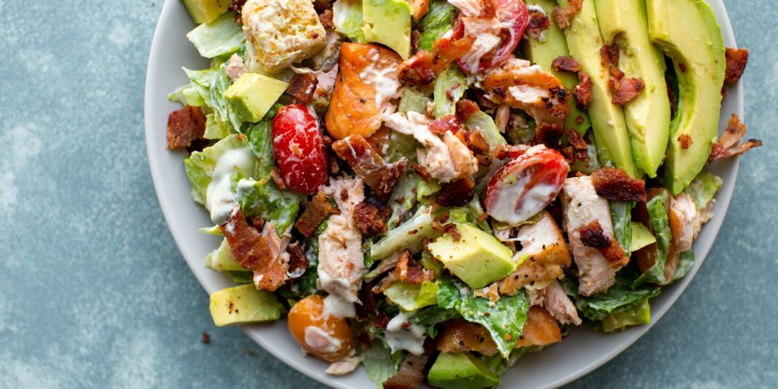

Салатите са много хранителни, богати на различни съставки и биха били достатъчни за обедното или вечерното ви меню.
Тук ще намерите рецепти на:
Италианска зелена салата
Продукти:
Приготвяне :
В голяма купа смесете всички зеленчуци. Разбъркайте ги с ръце. Добавете подправките. В малка купа пригответе дресинга – разбъркайте маслото от гроздовите семки, босилека, оцета, лимоновия сок, солта, пипера. След като сте разбъркали всички съставки на свежата салата, полейте с дресинга и сервирайте.
Италианска топла салата
Продукти:
Приготвяне:
Зехтинът се загрява в тигана на среден огън. Изсипва се лукът и се запържва до златист цвят. Добавят се гъбите. Запържват се за още 5 минути. Прибавя се тиквичката и се пържи, докато омекне. Добавят се доматите и босилекът и се отнема от огъня. Топлата салата по италиански се поднася веднага.
Салата с рукола, гриловани нектарини, прошуто и сирене бурата
Продукти:
Приготвяне :
Измийте и, без да белите прасковите, ги нарежете на полумесеци. Поръсете ги с черен пипер и сол и ги полейте със струйка зехтин. Подредете ги върху силно загрят оребрен тиган и ги гриловайте от двете страни за по 1-2 минути. Полейте салатата със струйка зехтин, малко сок от лайм и поръсете със сол. Сложете я в купа, заедно с грилованите нектарини. Навийте слайсовете прошуто и ги разположете небрежно върху салатата. Нарежете авокадо, полейте го със сок от лайм и го добавете. Накрая сложете буратата върху салатата и поръсете с черен пипер.